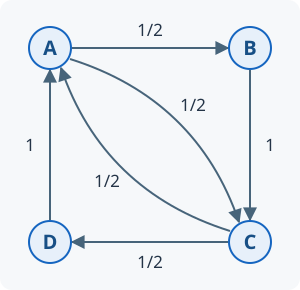

Uke 5 – hva overlever gjentatt matrisemultiplikasjon?
Hva skjer hvis vi gjentar den samme lineære transformasjonen på en vektor mange ganger? Og kan den samme regneoperasjonen brukes til å rangere nettsider?
Eksperimentene gir observasjoner å diskutere. Vi formulerer hypoteser, skriver dem som algebra og undersøker hvilke betingelser de trenger.
Undersøk, diskuter og begrunn. Bruk figurene og de korte kodeforsøkene. Under Gå i dybden finner du håndregning, begrunnelser og flere spørsmål.
Vi skal oppdage spesielle retninger, forklare hvorfor noen bidrag tar over, og bruke den samme ideen til å rangere nettsider etter besøk.
To deler: hente fram og bygge videre
| Matematikk 1 – dette henter vi fram | Matematikk 3A – dette bygger vi nå |
|---|---|
| Løse lineære likningssystemer; finne egenverdier og egenvektorer. Repetisjon i 5.2. | Forklare gjentatt multiplikasjon med bidrag langs egenvektorer, og undersøke når én retning dominerer. Forsøk i 5.1, teori i 5.3–5.4. |
| Bruke \((A-\lambda I)v=0\) til å finne alle egenvektorene til en egenverdi. | Knytte egenvektorbasis til tidligere arbeid med basis og ortogonalitet, og bruke dette i potensmetoden og PageRank (5.3–5.6). |
Du trenger ikke huske regneoppskriftene før første forsøk. I Gå i dybden henter vi dem fram trinn for trinn. Oppgavene i 5.8 Hovedløp bruker ukens nye ideer. 5.7 Støtteløp gir repetisjon av lineære systemer, egenverdier og egenvektorer ved behov. Du trenger ikke gjøre hele støtteløpet før hovedløpet.
Matematikk 3A: et nytt spørsmål. Vi bruker et forsøk til å vekke til live begrepene fra Matematikk 1; repetisjonen kommer i 5.2.
Eksperiment 1 – hvilken retning blir igjen?
Vi gjentar transformasjonen \(T(x)=Ax\), representert i standardbasisen ved
\[A=\begin{bmatrix}2&1\\1&2\end{bmatrix}.\]
Spørsmålet er om iterasjonsfølgene fra ulike startvektorer nærmer seg samme linje. Et klikk bruker transformasjonen én gang og setter deretter vektorlengden til én. Dermed kan vi følge retningen uten at voksende lengder tar vektoren ut av figuren. Undersøk både startvektorer som gir endret retning under iterasjonen, og egenvektorer der alle itererte vektorer forblir på samme linje:
- Velg (1, 0). Gjett hvilken linje den blå vektoren vil nærme seg. Trykk Ett steg fem ganger og noter om koordinatene nærmer seg hverandre.
- Velg (−1, 0) og gjenta. Er det samme linje? Samme orientering?
- Velg (1, 1) og deretter (1, −1). Gjør tre steg fra hver startvektor. Endres retningen? Skriv én observasjon for hver start.
- Prøv også (0, 1) og (1, −0.9). Det siste valget ligger nær den spesielle retningen \((1,-1)^T\). Dra deretter til en egen startvektor.
Startvalgene angir retninger. Å normalisere betyr her å dele på lengden, slik at vektoren får lengde én. Den oransje vektoren viser startvektoren \(x_0\); den blå viser den normaliserte vektoren \(x_k\). Hvert klikk regner ut \(Ax\) og deler på lengden til svaret. Vi bruker ingen normalisering av enkeltkoordinater. Formelen ved det blå endepunktet viser hvilket produkt retningen kommer fra, og at lengden er normalisert til én. Den oransje ringen kan dras også når den ligger rundt det blå endepunktet.
Hva la du merke til?
For mange startvektorer nærmer følgen av normaliserte vektorer \(x_k\) seg samme linje når transformasjonen gjentas, men grensevektorene kan ha motsatt orientering. Med startvektor langs \((1,1)^T\) eller \((1,-1)^T\) er retningen uendret gjennom iterasjonen. Vi skal undersøke hvordan transformasjonen virker langs disse linjene.
Vi samler multiplikasjon og normalisering i én oppdateringsregel:
\[F(x)=\frac{Ax}{\lVert Ax\rVert_2},\qquad x_{k+1}=F(x_k).\]
Her er \(\lVert x\rVert_2\) vektorens vanlige lengde, og \(k\) teller stegene. Regelen er definert når \(Ax\ne0\).
Kjenner dere igjen formen fra uke 2? Da sendte vi et tall inn i en regel og brukte svaret som neste verdi. Hva er likt nå, og hva er annerledes? Hvilken likning må en vektor oppfylle hvis neste steg skal gi akkurat samme vektor?
Etter \(k\) steg kan vi også skrive
\[x_k=\frac{A^kx_0}{\lVert A^kx_0\rVert_2}.\]
Vi setter \(A^0=I\), der \(I\) representerer identitetstransformasjonen \(x\mapsto x\). Startvektoren i figuren er normalisert til lengde én.
Diskuter: Hvorfor kan vi miste informasjon om lengde og likevel se hvilken retning som dominerer etter gjentatt transformasjon? Hva skiller de to spesielle startvektorene?
Gå i dybden: skaler uten å dreie
For startvektoren \((1,0)^T\) er første steg helt konkret
\[Ax_0=\begin{bmatrix}2\\1\end{bmatrix},\quad \lVert Ax_0\rVert_2=\sqrt5,\quad x_1=\frac1{\sqrt5}\begin{bmatrix}2\\1\end{bmatrix}.\]
Sjekk: Regn ut hva som skjer med \((1,1)^T\) og \((1,-1)^T\). Blir vektorene dreid, eller blir de bare ganget med et tall?
For \(x=(a,b)^T\) gir rad-ganger-kolonne-regelen
\[Ax=\begin{bmatrix}2a+b\\a+2b\end{bmatrix},\qquad \lVert Ax\rVert_2=\sqrt{(2a+b)^2+(a+2b)^2}.\]
Vi deler begge koordinatene på det samme positive tallet. Forholdet mellom koordinatene og orienteringen bevares. Vektoren får lengde én.
Fra \(x_0=(1,0)^T\) får vi
\[x_1=\frac{(2,1)^T}{\sqrt5},\qquad Ax_1=\frac{(5,4)^T}{\sqrt5},\qquad \lVert Ax_1\rVert_2=\frac{\sqrt{41}}{\sqrt5}.\]
Dermed kanselleres den tidligere normaliseringen:
\[x_2=\frac{(5,4)^T/\sqrt5}{\sqrt{41}/\sqrt5} =\frac{(5,4)^T}{\sqrt{41}} =\frac{A^2x_0}{\lVert A^2x_0\rVert_2}.\]
Den samme kanselleringen skjer ved hvert steg, og forklarer formelen i figuren. Vi utfører små, normaliserte steg; vi trenger ikke beregne hele \(A^k\) eksplisitt. Formelen forutsetter at nevnerne er ulike null.
Uten normalisering er de første resultatene \((1,0)^T,(2,1)^T,(5,4)^T,(14,13)^T\). Koordinatforskjellen er hele tiden én, men forskjellen blir liten relativt til størrelsen. Derfor nærmer retningen seg linjen \(x_2=x_1\). Her betyr \(x_1,x_2\) i linjelikningen koordinater, mens indeksen \(k\) i \(x_k\) ovenfor teller steg.
Ved valget \((1,-1)\) bruker figuren \(x_0=(1,-1)^T/\sqrt2\). Da er \(Ax_0=x_0\) allerede for startvektoren. Dette er et viktig unntak fra observasjonen om linjen \(x_2=x_1\), som vi forklarer i 5.2–5.3.
Matematikk 1: hent fram egenverdier og egenvektorer. Her repeterer vi betydningen og regnemetoden; du finner full håndregning under «Gå i dybden».
Fra geometrisk observasjon til algebra
I figuren i 5.1 forble alle itererte vektorer på samme linje som startvektoren når denne lå langs \((1,1)^T\) eller \((1,-1)^T\). Figuren normaliserte lengden etter hvert steg. Nå spør vi: Hva gjør transformasjonen langs disse linjene før vi normaliserer?
Vi tar den geometriske observasjonen «samme linje» og skriver den som algebra: resultatet \(T(x)\) er et tall ganger startvektoren \(x\), altså \(T(x)=\lambda x\) for et tall \(\lambda\) og en startvektor \(x\ne0\). Siden \(T(x)=Ax\), blir dette \(Ax=\lambda x\). For \(A=\begin{bmatrix}2&1\\1&2\end{bmatrix}\) får vi
\[A\begin{bmatrix}1\\1\end{bmatrix}=3\begin{bmatrix}1\\1\end{bmatrix}, \qquad A\begin{bmatrix}1\\-1\end{bmatrix}=1\begin{bmatrix}1\\-1\end{bmatrix}.\]
Den ene retningen strekkes med faktor 3; den andre har faktor 1. Hva kunne normaliseringen i figuren skjule? Vi bruker observasjonen til å formulere en likning, og bruker så regning til å finne både strekkfaktorene og alle vektorene som oppfyller likningen.
Matematikk 3A: hvorfor nærmer iterasjonsfølgene seg samme linje fra ulike startvektorer? I 5.1 valgte vi startvektoren \(x_0=(1,0)^T\). Ved gjentatt anvendelse av transformasjonen \(T(x)=Ax\), med normalisering etter hvert steg, nærmet vektorene \(x_k\) seg linjen gjennom \((1,1)^T\). I 5.2 fant vi de to egenretningene. Nå bruker vi dem til å dele startvektoren i to bidrag og følge hvert bidrag når transformasjonen gjentas.
Eksperiment 2 – hvilken del tar over?
For \(A=\begin{bmatrix}2&1\\1&2\end{bmatrix}\) bruker vi \(v_1=(1,1)^T\) og \(v_2=(1,-1)^T\). Startvektoren kan bygges slik:
\[x_0=\begin{bmatrix}1\\0\end{bmatrix} ={\color{#1565c0}\underbrace{\tfrac12\begin{bmatrix}1\\1\end{bmatrix}}_{c_1v_1}} +{\color{#a04a00}\underbrace{\tfrac12\begin{bmatrix}1\\-1\end{bmatrix}}_{c_2v_2}}.\]
Etter \(k\) anvendelser av transformasjonen, før normalisering, er bidragene
\[{\color{#1565c0}b_1(k)=c_1\,3^k v_1},\qquad {\color{#a04a00}b_2(k)=c_2\,1^k v_2},\qquad A^kx_0=b_1(k)+b_2(k).\]
Ved hvert steg tredobles lengden til \(b_1(k)\), mens \(b_2(k)\) beholder lengden. Hvordan endres bidragenes relative størrelse under gjentatt transformasjon?
Kurvene viser hver sin andel av summen av bidragenes lengder:
\[{\color{#1565c0}a_1(k)= \frac{\lVert b_1(k)\rVert_2}{\lVert b_1(k)\rVert_2+\lVert b_2(k)\rVert_2}}, \qquad {\color{#a04a00}a_2(k)= \frac{\lVert b_2(k)\rVert_2}{\lVert b_1(k)\rVert_2+\lVert b_2(k)\rVert_2}}.\]
Nevneren er summen av bidragenes lengder, ikke lengden av summen \(b_1(k)+b_2(k)\). For \(c_1=c_2=1/2\) er \(a_1(0)=a_2(0)=1/2\). For alle \(k\) er \(a_1(k)+a_2(k)=1\). Vannrett akse viser \(k\); blå kurve viser \(a_1(k)\) og oransje viser \(a_2(k)\).
- Kjør med
c1 = c2 = 0.5. Blir det oransje bidraget kortere, eller blir det bare mindre sammenlignet med det blå? - Sett deretter
c1 = 0.0og beholdc2 = 0.5. Nå er koeffisienten til \(v_1\) i startvektoren null. Kan \(b_1(k)\) bli ulik null under iterasjonen?
En del kan bestå i absolutte tall og likevel miste betydning for retningen. Hvis koeffisienten langs egenvektoren med størst egenverdi i absoluttverdi er null i startvektoren, forblir dette bidraget null under iterasjonen i eksakt regning. Diskuter: Hvordan avhenger iterasjonsfølgen av transformasjonen og startvektoren?
Skriv observasjonen som algebra
Linearitet betyr at transformasjonen virker på hvert bidrag for seg: \(A(c_1v_1+c_2v_2)=c_1Av_1+c_2Av_2\). De to egenverdiene brukes én gang for hvert steg; vi lar potensene stå synlige:
\[\begin{aligned} Ax_0&=\tfrac12{\color{#1565c0}3}\,v_1+\tfrac12{\color{#a04a00}1}\,v_2=(2,1)^T,\\ A^2x_0&=\tfrac12{\color{#1565c0}3^2}\,v_1+\tfrac12{\color{#a04a00}1^2}\,v_2=(5,4)^T,\\ A^3x_0&=\tfrac12{\color{#1565c0}3^3}\,v_1+\tfrac12{\color{#a04a00}1^3}\,v_2=(14,13)^T. \end{aligned}\]
Dette forklarer kurvene: den oransje lengden er konstant, mens den blå vokser. At en andel nærmer seg null, betyr altså ikke at selve bidraget blir null.
Fra dette eksemplet til teorien
En basis lar oss skrive enhver vektor entydig som en sum av bidrag langs basisvektorene. Hvis egenvektorene \(v_1,\ldots,v_n\) er en basis, og \(c_i\) er startvektorens koeffisient i retning \(v_i\), får vi
\[x_0=\sum_{i=1}^n c_iv_i, \qquad A^kx_0=\sum_{i=1}^n c_i\lambda_i^kv_i.\]
Matrisen kalles da diagonaliserbar. Egenverdien \(\lambda_1\) er dominant når \(|\lambda_1|>|\lambda_i|\) for alle \(i>1\). Hvis \(c_1\ne0\), vokser dens bidrag relativt til de andre. Forholdet \(|\lambda_2/\lambda_1|\), med egenverdiene sortert etter absoluttverdi, forklarer farten etter mange steg: nær én betyr langsom utskilling.
Gå i dybden: hvorfor kan vi behandle bidragene hver for seg?
Følg to bidrag for hånd.
Bruk \(A\) fra 5.1. Start med
\[x_0=\begin{bmatrix}1\\0\end{bmatrix} =\tfrac12\begin{bmatrix}1\\1\end{bmatrix} +\tfrac12\begin{bmatrix}1\\-1\end{bmatrix}.\]
Før du leser videre: Bruk resultatene \(Av_1=3v_1\) og \(Av_2=v_2\) fra 5.2, med \(v_1=(1,1)^T\) og \(v_2=(1,-1)^T\). Skriv \(Ax_0\), \(A^2x_0\) og \(A^3x_0\) som summer av disse to vektorene. Noter forholdet mellom den andre og den første koeffisienten.
Slik kan du tenke: Bruk \(Av_1=3v_1\) og \(Av_2=1v_2\) på hvert ledd. Fargene er de samme som i plottet:
\[\begin{aligned} Ax_0&=\tfrac12Av_1+\tfrac12Av_2 =\tfrac12{\color{#1565c0}3}\,v_1+\tfrac12{\color{#a04a00}1}\,v_2,\\ A^2x_0&=\tfrac12{\color{#1565c0}3^2}\,v_1+\tfrac12{\color{#a04a00}1^2}\,v_2,\\ A^3x_0&=\tfrac12{\color{#1565c0}3^3}\,v_1+\tfrac12{\color{#a04a00}1^3}\,v_2. \end{aligned}\]
Etter \(k\) steg er
\[A^kx_0=\tfrac12{\color{#1565c0}3^k}\begin{bmatrix}1\\1\end{bmatrix} +\tfrac12{\color{#a04a00}1^k}\begin{bmatrix}1\\-1\end{bmatrix}.\]
Det andre bidraget forsvinner ikke. Men forholdet mellom bidragene er \(3^{-k}\), og derfor nærmer den normaliserte vektoren seg den første linjen. Vi kan se dette direkte ved å dele ut den dominerende skaleringen:
\[A^kx_0=\tfrac12 3^k\bigl(v_1+3^{-k}v_2\bigr),\qquad x_k=\frac{v_1+3^{-k}v_2}{\lVert v_1+3^{-k}v_2\rVert_2} \longrightarrow\frac{v_1}{\sqrt2}.\]
Prøv en annen startvektor: Hva endres i iterasjonsfølgen hvis startvektoren er \(x_0=v_2/\sqrt2\)? Da mangler bidraget langs \(v_1\) helt, slik du så med startvalget \((1,-1)\) i figuren.
Linearitet gir \(A(c_1v_1+c_2v_2)=c_1Av_1+c_2Av_2\). Sett inn \(Av_i=\lambda_iv_i\). Ved neste multiplikasjon får hvert bidrag enda en faktor \(\lambda_i\). Gjenta \(k\) ganger.
Samle basisvektorene i \(V=[v_1\ \cdots\ v_n]\) og egenverdiene i \(\Lambda=\operatorname{diag}(\lambda_1,\ldots,\lambda_n)\). Da betyr \(AV=V\Lambda\) at hver kolonne oppfyller egenvektorlikningen. Siden kolonnene er en basis, er \(V\) invertibel:
\[A=V\Lambda V^{-1},\qquad A^k=V\Lambda^kV^{-1}.\]
Les fra høyre: finn bidragene, skaler dem, og bygg vektoren igjen. Ikke alle matriser har en egenvektorbasis. Vi bruker en slik basis som forutsetning i denne forklaringen av potensmetoden.
Hvordan finner vi koeffisientene? For en vilkårlig startvektor \((a,b)^T\) løser vi
\[c_1(1,1)^T+c_2(1,-1)^T=(a,b)^T.\]
Koordinatene gir \(c_1+c_2=a\) og \(c_1-c_2=b\). Legg sammen og trekk fra:
\[c_1=\frac{a+b}{2},\qquad c_2=\frac{a-b}{2}.\]
For \((1,0)^T\) er begge \(1/2\). For \((1,-1)^T\) er \(c_1=0\). I matrisenotasjon er dette \(c=V^{-1}x_0\), hvor
\[V=\begin{bmatrix}1&1\\1&-1\end{bmatrix},\qquad V^{-1}=\frac12\begin{bmatrix}1&1\\1&-1\end{bmatrix}.\]
Videre er \(A^2=(V\Lambda V^{-1})(V\Lambda V^{-1})=V\Lambda^2V^{-1}\), fordi de to midterste faktorene gir \(V^{-1}V=I\). Slik får vi formelen for \(A^k\).
For to generelle egenverdier er forholdet mellom koeffisientenes absoluttverdier
\[\frac{|c_2\lambda_2^k|}{|c_1\lambda_1^k|} =\left|\frac{c_2}{c_1}\right|\left|\frac{\lambda_2}{\lambda_1}\right|^k.\]
Dette krever \(c_1\ne0\). Hvis \(\lambda_1<0\), skifter den dominerende koeffisienten fortegn; da konvergerer linjen, mens de normaliserte vektorene kan veksle mellom motsatte orienteringer.
Fra projeksjon i uke 4 til egenvektorbidrag
I uke 4.2 fant vi den ortogonale projeksjonen av en vektor \(x\) på en linje med enhetsvektor \(q\). Vi skilte mellom ett tall og en vektor:
\[\underbrace{c=q^Tx}_{\text{koordinaten langs }q},\qquad \underbrace{p=(q^Tx)q=cq}_{\text{projeksjonen på linjen gjennom }q}.\]
Koordinaten \(c\) kan være negativ; fortegnet angir orientering langs \(q\). Projeksjonsvektoren \(p\) er bidraget til \(x\) langs denne linjen.
Her bruker vi de samme projeksjonene på de to egenretningene. Vi normaliserer egenvektorene fra eksperimentet:
\[{\color{#1565c0}q_1=\frac1{\sqrt2}\begin{bmatrix}1\\1\end{bmatrix}}, \qquad {\color{#a04a00}q_2=\frac1{\sqrt2}\begin{bmatrix}1\\-1\end{bmatrix}}.\]
De har lengde én og står vinkelrett, så de danner en ortonormal basis for \(\mathbb R^2\). Dermed er enhver vektor summen av de to projeksjonene:
\[x={\color{#1565c0}(q_1^Tx)q_1} +{\color{#a04a00}(q_2^Tx)q_2}.\]
Hva er nytt i uke 5? Basisvektorene er også egenvektorer: \(Aq_1=3q_1\) og \(Aq_2=1q_2\). Under transformasjonen \(T(x)=Ax\) skaleres derfor hvert projeksjonsbidrag med sin egenverdi:
\[Ax={\color{#1565c0}3(q_1^Tx)q_1} +{\color{#a04a00}1(q_2^Tx)q_2}.\]
Diskuter: Hvis projeksjonen av startvektoren på linjen gjennom \(q_1\) er null, kan gjentatt anvendelse av \(T\) gi et bidrag langs denne linjen?
Spektralteoremet: en ortonormal basis av egenvektorer
Dette er mulig for alle reelle symmetriske matriser, ikke bare for eksemplet vårt. Spektralteoremet: En reell symmetrisk matrise \(A\) (\(A^T=A\)) har reelle egenverdier og en ortonormal basis av egenvektorer \(q_1,\ldots,q_n\) for hele \(\mathbb R^n\).
Sett egenvektorene som kolonner i \(Q=[q_1\ \cdots\ q_n]\) og de tilhørende egenverdiene på diagonalen i \(\Lambda\). Da er
\[A=Q\Lambda Q^T,\qquad Ax=\sum_{i=1}^n\lambda_i(q_i^Tx)q_i.\]
Faktoriseringen uttrykker akkurat oppdelingen vi nettopp brukte: \(Q^Tx\) gir koordinatene, \(\Lambda(Q^Tx)\) gir de skalerte koordinatene, og multiplikasjon med \(Q\) gir summen av de skalerte egenvektorbidragene. Navnet spektral viser til spekteret, samlingen av egenverdier.
I uke 4 kunne \(Q\) inneholde en basis for bare et underrom; da var \(QQ^Tx\) projeksjonen på dette underrommet. Her er basisen fullstendig, så \(QQ^Tx=x\) for alle \(x\) og \(QQ^T=I\).
Gå i dybden: fra projeksjonskoordinater til spektralteoremet
Vi følger ett eksempel hele veien: \(A=\begin{bmatrix}2&1\\1&2\end{bmatrix}\) og \(x=(1,0)^T\). Deretter undersøker vi hva symmetrien garanterer generelt.
1. Finn koordinatene med projeksjon fra uke 4
Normaliser egenvektorene \(v_1=(1,1)^T\) og \(v_2=(1,-1)^T\). Sett dem som kolonner i \(Q\), og beregn selv \(Q^TQ\) og \(c=Q^Tx\).
\[Q=\frac1{\sqrt2}\begin{bmatrix}1&1\\1&-1\end{bmatrix}, \qquad Q^TQ=I,\qquad c=Q^Tx=\frac1{\sqrt2}\begin{bmatrix}1\\1\end{bmatrix}.\]
Hver koordinat \(c_i=q_i^Tx\) er et tall. Projeksjonsvektoren er \(c_iq_i\). For denne \(x\) får vi
\[x={\color{#1565c0}\frac1{\sqrt2}q_1} +{\color{#a04a00}\frac1{\sqrt2}q_2} ={\color{#1565c0}\frac12v_1}+{\color{#a04a00}\frac12v_2}.\]
Koordinatene endres når basisvektorene normaliseres, men de to projeksjonsvektorene er uendret.
2. Skaler projeksjonsbidragene med egenverdiene
Siden \(Aq_1=3q_1\) og \(Aq_2=q_2\), blir
\[Ax={\color{#1565c0}\frac3{\sqrt2}q_1} +{\color{#a04a00}\frac1{\sqrt2}q_2} =\begin{bmatrix}2\\1\end{bmatrix}.\]
Dette er beregningen \(Ax=Q\Lambda(Q^Tx)\): finn koordinatene, skaler dem med egenverdiene, og summer de nye basisbidragene. Kontroller med direkte multiplikasjon at resultatet er det samme.
3. Hvorfor står egenretningene vinkelrett?
La nå \(A\) være en vilkårlig reell symmetrisk matrise, med \(Av=\lambda v\) og \(Aw=\mu w\). Da er
\[\begin{aligned} \lambda v^Tw&=(Av)^Tw &&\text{fordi }Av=\lambda v,\\ &=v^TA^Tw &&\text{ved transponering},\\ &=v^TAw &&\text{fordi }A^T=A,\\ &=\mu v^Tw &&\text{fordi }Aw=\mu w. \end{aligned}\]
Dermed er \((\lambda-\mu)v^Tw=0\). Ulike egenverdier gir derfor ortogonale egenvektorer når \(A\) er reell og symmetrisk.
Innenfor samme egenrom kan vi bruke Gram–Schmidt fra uke 4; alle lineærkombinasjonene forblir i egenrommet. Spektralteoremet sier i tillegg at det finnes nok egenvektorer til en basis for hele rommet. Dette siste utsagnet er ikke bevist av regningen ovenfor.
4. En følge vi bruker i uke 6
For en reell symmetrisk matrise skriver vi \(x=Qc\), der \(c=Q^Tx\). Da gir \(Q^TQ=I\) og \(A=Q\Lambda Q^T\) at
\[x^TAx=c^T\Lambda c=\sum_i\lambda_i c_i^2.\]
Er alle egenverdiene positive, er summen positiv for enhver \(x\ne0\), fordi minst én koordinat \(c_i\) da er ulik null. Dette kalles positiv definitet. I uke 6 bruker vi egenskapen til å knytte løsningen av et lineært system til et entydig minimum.
Eksperiment 3 – hva bestemmer farten?
Hvor raskt øker andelen langs egenvektoren med størst egenverdi? Vi beholder egenvektorene fra eksperiment 2 og sammenligner \(A_\mu=Q\operatorname{diag}(3,\mu)Q^T\) for \(\mu=1\) og \(\mu=2.9\). Kolonnene i \(Q\) er de ortonormale egenvektorene fra 5.3. Startvektoren er \(x_0=(1,0)^T\) i begge iterasjonsfølgene.
Vi bruker de samme andelene som i eksperiment 2:
\[a_i(k)=\frac{\lVert b_i(k)\rVert_2} {\lVert b_1(k)\rVert_2+\lVert b_2(k)\rVert_2},\qquad i=1,2.\]
Her er \(b_1(k)\) bidraget langs \(q_1\) med egenverdi 3, og \(b_2(k)\) bidraget langs \(q_2\) med egenverdi \(\mu\). Figuren har fire kurver:
- Blå: \(a_1(k)\). Oransje: \(a_2(k)\).
- Heltrukket: \(\mu=1\). Stiplet: \(\mu=2.9\).
- Forutsi hvilket kurvepar som raskest nærmer seg andelene 1 og 0.
- Kjør cellen. Sammenlign de to oransje kurvene etter 10 steg.
- Omtrent hvor mange steg kreves før hver oransje kurve kommer under 0.1? Hva sier forskjellen om effekten av nesten like egenverdier?
For \(\mu=1\) øker den blå andelen raskt mot 1. For \(\mu=2.9\) endres andelene langsommere: begge bidragene vokser nesten like mye ved hvert steg. Det er forholdet mellom egenverdiene, \(\mu/3\), som bestemmer farten.
Gå i dybden: knytt andelskurvene til egenverdiene
Startvektoren har like store koordinater langs \(q_1\) og \(q_2\). Etter \(k\) multiplikasjoner er forholdet mellom bidragenes lengder derfor
\[r_k=\frac{\lVert b_2(k)\rVert_2}{\lVert b_1(k)\rVert_2} =\left(\frac{|\mu|}{3}\right)^k.\]
Forholdet \(r_k\) og andelen \(a_2(k)\) er ulike størrelser. Del teller og nevner i andelsformelen på \(\lVert b_1(k)\rVert_2\):
\[{\color{#1565c0}a_1(k)=\frac{1}{1+r_k}},\qquad {\color{#a04a00}a_2(k)=\frac{r_k}{1+r_k}}.\]
Ved \(k=0\) er begge andelene \(1/2\). Etter 10 steg er den oransje andelen omtrent \(0.0000169\) for \(\mu=1\), men \(0.416\) for \(\mu=2.9\).
For å få \(a_2(k)<0.1\) må
\[\frac{r_k}{1+r_k}<0.1\quad\Longleftrightarrow\quad r_k<\frac19.\]
Dette gir 3 steg for \(\mu=1\) og 65 steg for \(\mu=2.9\). Kontroller med potensuttrykket for \(r_k\).
Dette minner om konvergensfarten i uke 2.2–2.3: der ble en liten feil omtrent ganget med \(|g'(r)|\) ved hvert steg. Her gjelder den eksakte skaleringen \(r_{k+1}=(|\mu|/3)r_k\) for forholdet mellom bidragene. En faktor nær én gir langsom endring i begge tilfeller.
I koden beregner vi koordinatene fra de itererte vektorene, ikke direkte fra potensformelen. Avrunding kan derfor påvirke svært små bidrag. Den lineære andelsaksen gjør sammenligningen med eksperiment 2 direkte, men viser ikke slike små avvik tydelig.
Skriv opp det vi nettopp gjorde
Dette er potensmetoden:
Velg x ≠ 0 og del x på lengden sin.
Gjenta, med en øvre grense for antall steg:
y = A x
Hvis y = 0: stopp; normalisering er ikke mulig.
x = y / ‖y‖₂
Finn et tall ρ som beskriver skaleringen langs x.
Kontroller hvor godt A x ≈ ρ x.Ett steg består av multiplikasjon og normalisering:
\[y_k=Ax_k,\qquad x_{k+1}=\frac{y_k}{\lVert y_k\rVert_2}.\]
Potensmetoden som fikspunktiterasjon
I uke 2.1 brukte vi \(x_{k+1}=g(x_k)\) for å nærme oss et tall \(r\) som oppfyller \(g(r)=r\). Oppdateringen fra 5.1 har samme form, men nå er \(x_k\) en vektor: \(x_{k+1}=F(x_k)\) med \(F(x)=Ax/\lVert Ax\rVert_2\). Potensmetoden er altså en fikspunktiterasjon. Et fikspunkt \(x_*\) oppfyller \(F(x_*)=x_*\).
Normaliseringen gjør \(F\) til en ikke-lineær avbildning, selv om \(x\mapsto Ax\) er lineær.
Hvilke vektorer blir stående uendret? Hvis \(F(x_*)=x_*\), så
\[Ax_*=\lVert Ax_*\rVert_2\,x_*.\]
Et fikspunkt er altså en enhetsvektor som er egenvektor til en positiv egenverdi. Omvendt er enhver slik egenvektor et fikspunkt. Det betyr ikke at alle startvektorer nærmer seg det: egenverdiene og bidragene i startvektoren avgjør utviklingen.
For en enhetsegenvektor \(v\) med negativ egenverdi er \(F(v)=-v\) og \(F(-v)=v\). Iterasjonen veksler da mellom to vektorer på samme linje. Linjen er uendret, men vektoren er ikke et fikspunkt. Dette er en av situasjonene vi undersøker i eksperiment 4.
Fra projeksjon til et anslag for egenverdien
Potensmetoden finner først en mulig egenvektorretning \(x\). Vi trenger også en skalering: hvilket tall \(t\) gjør \(tx\) til den beste tilnærmingen til \(Ax\)? Vi søker altså den ortogonale projeksjonen av \(Ax\) på linjen \(\operatorname{span}\{x\}\), ikke på en av koordinataksene.
Fra uke 4: For \(x\ne0\) er projeksjonen av en vektor \(b\) på denne linjen \(\frac{x^Tb}{x^Tx}x\). Indreproduktet \(x^Tb=\sum_i x_i b_i\) gir telleren; nevneren \(x^Tx=\|x\|_2^2\) korrigerer for lengden til \(x\). Med \(b=Ax\) blir projeksjonen \(\rho(x)x\), der
\[\rho(x)=\frac{x^TAx}{x^Tx},\qquad r=Ax-\rho(x)x,\qquad x^Tr=0.\]
\(\rho\) kalles Rayleigh-kvotienten og er koeffisienten som minimerer \(\|Ax-tx\|_2\) over alle tall \(t\). Egenresidualen \(r\) er den delen av \(Ax\) som står vinkelrett på \(x\) og derfor ikke kan beskrives som en skalering av \(x\). Geometrien gir projeksjonen; algebraen gir en formel vi kan beregne.
For \(x=(1,0)^T\) og matrisen fra 5.1 er \(Ax=(2,1)^T\). Projeksjonen på førsteaksen er \((2,0)^T=2x\), så \(\rho=2\) og \(r=(0,1)^T\). Det gjenstår et bidrag på tvers: \(x\) er ikke en egenvektor. For \(x=(1,1)^T/\sqrt2\) ligger hele \(Ax\) på samme linje: \(\rho=3\) og \(r=0\).
I uke 2.4 målte vi fikspunktresidualen \(g(x)-x\). Her måler vi egenresidualen \(Ax-\rho x\), som kontrollerer en annen likning. For en enhetsegenvektor \(v\) med negativ egenverdi er egenresidualen null, mens fikspunktresidualen er \(F(v)-v=-2v\). Derfor kan potensmetoden ha funnet en egenvektor selv om neste normaliserte vektor har motsatt fortegn.
Hva forteller kontrollen? Liten \(\|r\|_2\) betyr at egenvektorlikningen nesten er oppfylt. Det sier ikke at vi har funnet den dominante egenverdien: retningen med egenverdi 1 gir også null residual. Derfor ser vi både på startvektoren, utviklingen i forsøket og residualen når vi vurderer resultatet.
Gå i dybden: hvorfor akkurat denne kvotienten?
Vi prøver å beskrive \(Ax\) ved én vektor \(\rho x\) på linjen gjennom \(x\). Projeksjonsregelen fra uke 4 gir koeffisienten \(\rho=x^T(Ax)/(x^Tx)\). Resten er ortogonal på \(x\). For en enhetsvektor blir dette \(\rho=x^TAx\).
En liten residual viser at likningen nesten er oppfylt. Den beviser ikke at vi har funnet den dominante egenverdien. For en generell matrise gir den heller ikke alene en garanti for at vektoren ligger nær en bestemt eksakt egenvektor. Derfor undersøker vi også startvektor og forventet spekter.
Projeksjonskoeffisienten minimerer \(\lVert Ax-tx\rVert_2\) over tall \(t\). Vi kan også finne den ved ortogonalitetskravet fra uke 4:
\[x^T(Ax-\rho x)=0 \quad\Longrightarrow\quad x^TAx-\rho x^Tx=0 \quad\Longrightarrow\quad \rho=\frac{x^TAx}{x^Tx}.\]
For \(A=\begin{bmatrix}2&1\\1&2\end{bmatrix}\) og \(x=(1,0)^T\) er \(Ax=(2,1)^T\), \(\rho=2\) og \(r=(0,1)^T\). Transformasjonen gir altså også et bidrag på tvers av den valgte retningen; den er ennå ingen egenretning. For \(x=(1,1)^T/\sqrt2\) blir derimot \(\rho=3\) og \(r=0\).
En residual er en vektor; residualnormen er ett tall. I koden lagrer vi både \(\rho\) og residualnormen, ikke hele residualvektoren.
Gå i dybden: beregn skaleringen og det som blir igjen
Gjenta for hånd: Bruk første normaliserte steg \(x=(2,1)^T/\sqrt5\) fra 5.1. Beregn først \(Ax\), deretter \(\rho\) og \(r\). Sammenlign med
\[Ax=\frac1{\sqrt5}\begin{bmatrix}5\\4\end{bmatrix},\qquad \rho=\frac{2\cdot5+1\cdot4}{5}=\frac{14}{5},\]
\[r=\frac1{5\sqrt5}\begin{bmatrix}-3\\6\end{bmatrix},\qquad \lVert r\rVert_2=\frac35.\]
Retningen er ennå ikke en egenretning, men residualnormen har falt fra \(1\) ved \(k=0\) til \(3/5\) etter ett steg.
Gå i dybden: implementasjonen av potensmetoden
Definisjonen kjøres automatisk. Les koden etter pseudokoden: normalisering, Rayleigh-kvotient, residual og en øvre grense for antall steg.
Følg én løkkeomgang: y er \(Ax\), rho er \(x^TAx\) siden \(\lVert x\rVert_2=1\), og residual er \(\lVert Ax-\rho x\rVert_2\). Vi lagrer kontrollene før neste oppdatering. Derfor gjelder siste rad i history akkurat den vektoren funksjonen returnerer.
scale er \(\lVert A\rVert_F\), Frobeniusnormen: kvadratroten av summen av alle kvadrerte matriseelementer. Stoppkravet er \(\lVert r\rVert_2/\lVert A\rVert_F\le\text{tol}\) for \(A\ne0\). En felles skalering av \(A\) skalerer både teller og nevner like mye. max_steps hindrer at et ikke-konvergerende forsøk fortsetter uten grense.
Hvis \(Ax=0\), er \(x\) allerede en egenvektor for null, men vi kan ikke utføre neste normalisering. Meldingen forklarer dette særtilfellet. «Liten egenresidual» betyr at likningen er godt oppfylt; funksjonen lover ikke at det er den dominante egenverdien som er funnet.
Den valgte toleransen \(\text{tol}\) angir hvor liten relativ residual vi krever før vi stopper. Vi sammenligner residualnormen med \(\text{tol}\,\lVert A\rVert_F\) fordi \(x\) har lengde én. Frobeniusnormen er kvadratroten av summen av de kvadrerte matriseelementene. Dette gjør testen uavhengig av en felles skalering av \(A\).
Eksperiment 4 – når stabiliseres ikke retningen?
I eksperiment 3 var én egenverdi størst i absoluttverdi, og startvektoren hadde et bidrag langs den tilhørende egenvektoren. Nå undersøker vi hva som skjer når et slikt bidrag mangler, når fortegnet skifter, eller når ingen egenretning får større relativ vekt.
I alle fire tilfellene bruker vi samme oppdatering:
\[x_{k+1}=\frac{Ax_k}{\lVert Ax_k\rVert_2}.\]
| Tilfelle | Matrise for transformasjonen | Startvektor før normalisering | Spørsmål før kjøring |
|---|---|---|---|
| Manglende dominant bidrag | \(\operatorname{diag}(3,1)\) | \((0,1)^T\) | Kan første koordinat bli ulik null? |
| Negativ dominant egenverdi | \(\operatorname{diag}(-3,1)\) | \((1,1)^T\) | Hva skjer med fortegnet til første koordinat ved hvert steg? |
| Like store absoluttverdier | \(\operatorname{diag}(1,-1)\) | \((1,1)^T\) | Kan ett av de to bidragene dominere det andre? |
| Rotasjon | \(\begin{bmatrix}0&-1\\1&0\end{bmatrix}\) | \((1,0)^T\) | Hva skjer når en kvart omdreining gjentas? |
Slik leser du figurene: Hvert punkt er endepunktet til en normalisert vektor \(x_k\). Aksene viser koordinatene, ikke antall steg. Strekene forbinder påfølgende punkter; de viser ikke en kontinuerlig bevegelse. Figuren viser \(x_0,\ldots,x_6\). Punkter som er like, ligger oppå hverandre.
Forutsi, og kjør: Hvilket tilfelle gir samme vektor ved hvert steg? Hvilket nærmer seg én linje uten å nærme seg én bestemt enhetsvektor? Hvilke gir en gjentakende syklus?
Utskriften kommer fra en egen kjøring av potensmetoden med inntil 100 steg. Den stopper når egenresidualen er liten nok, eller når steggrensen nås. Derfor kan den rapportere et annet antall steg enn de seks som tegnes.
1. Manglende dominant bidrag: riktig egenvektor, men feil egenverdi for målet vårt
Fra \(x_0=(0,1)^T\) er \(Ax_0=x_0\). Første koordinat forblir null, så iterasjonen kan ikke utvikle et bidrag langs egenvektoren til egenverdi 3. Den returnerer egenverdi 1 med residual null. Kontrollen bekrefter et egenpar, men bekrefter ikke at egenverdien er størst i absoluttverdi.
2. Negativ dominant egenverdi: linjen stabiliseres, orienteringen veksler
Før normalisering er \(A^k(1,1)^T=((-3)^k,1)^T\). Første koordinat dominerer i absoluttverdi og skifter fortegn. De normaliserte vektorene nærmer seg derfor vekselvis \((1,0)^T\) og \((-1,0)^T\). Begge ligger på samme egenlinje. Rayleigh-kvotienten nærmer seg \(-3\), og egenresidualen nærmer seg null selv om vektorene ikke konvergerer mot ett punkt.
3. Like store absoluttverdier: ingen av bidragene blir dominerende
Her veksler de normaliserte vektorene mellom \((1,1)^T/\sqrt2\) og \((1,-1)^T/\sqrt2\). Bidragene beholder samme lengde; bare fortegnet til det andre endres. Dette er to forskjellige linjer, ikke motsatt orientering på én linje. Rayleigh-kvotienten er 0 og egenresidualens norm er 1.
4. Rotasjon: ingen reell egenlinje å nærme seg
Transformasjonen roterer vektoren \(90^\circ\) mot klokken ved hvert steg. Iterasjonen besøker fire punkter før den gjentas. For enhver reell enhetsvektor står \(Ax\) vinkelrett på \(x\), så \(\rho=x^TAx=0\) og \(\lVert Ax-\rho x\rVert_2=1\). Ingen reell ikke-null vektor oppfyller \(Ax=\lambda x\).
I uke 2.3 så vi at en iterasjon kan nærme seg en 2-syklus i stedet for et fikspunkt. Tilfelle 2 og 3 viser samme skille for vektorer: to tilstander gjentas eller nærmes vekselvis, selv om ett enkelt grensepunkt mangler.
Diskuter: Hvorfor er det tre forskjellige spørsmål om vektorene konvergerer, om linjen de spenner ut stabiliseres, og om vi har funnet egenverdien med størst absoluttverdi? Bruk tilfelle 1 og 2 som eksempler.
Gå i dybden: beregn forløpene og skill mellom vektor og linje
Beregn to steg i hvert tilfelle. Normaliser startvektoren først. Beregn deretter Rayleigh-kvotienten \(\rho_k=x_k^TAx_k\) og egenresidualen \(r_k=Ax_k-\rho_kx_k\). Sammenhold med observasjonene ovenfor.
For de tre diagonalmatrisene kan vi først regne uten normalisering:
\[\begin{aligned} \operatorname{diag}(3,1)^k(0,1)^T&=(0,1)^T,\\ \operatorname{diag}(-3,1)^k(1,1)^T&=((-3)^k,1)^T,\\ \operatorname{diag}(1,-1)^k(1,1)^T&=(1,(-1)^k)^T. \end{aligned}\]
I andre tilfelle deler vi på \(\sqrt{3^{2k}+1}\). Andre koordinat går da mot null, mens første går mot 1 langs partallsstegene og mot \(-1\) langs oddetallsstegene. I tredje tilfelle deler vi alltid på \(\sqrt2\), så begge bidragene består.
Hvordan måle endring av linje? Enhetsvektorene \(x\) og \(-x\) spenner ut samme linje. Derfor kan vi sammenligne begge orienteringene:
\[d_k=\min\bigl(\lVert x_{k+1}-x_k\rVert_2, \lVert x_{k+1}+x_k\rVert_2\bigr).\]
Første norm er liten når vektorene er nesten like; andre norm er liten når de er nesten motsatte. I tilfelle 2 går \(d_k\) mot null, selv om \(\lVert x_{k+1}-x_k\rVert_2\) går mot 2. I tilfelle 3 og 4 er påfølgende vektorer ortogonale, så \(d_k=\sqrt2\). En liten \(d_k\) alene sier likevel ikke hvilken egenverdi vi har funnet.
Rotasjonen gir \((1,0)^T\mapsto(0,1)^T\mapsto(-1,0)^T\mapsto(0,-1)^T\) og deretter startvektoren igjen. Determinantlikningen er \(\lambda^2+1=0\), som ikke har reelle løsninger. Over komplekse tall er egenverdiene \(i\) og \(-i\).
Tilfelle 1 beskriver eksakt regning. Avrunding kan i andre beregninger tilføre et lite bidrag som mangler matematisk. Her brukes en diagonalmatrise og en eksakt nullkoordinat for å isolere mekanismen. Eksperiment 5 undersøker hva som skjer når startvektoren får et lite bidrag langs den dominante egenretningen.
Eksperiment 5 – kan en liten startforskjell vokse?
I eksperiment 4 ble iterasjonsfølgen værende langs \((0,1)^T\), selv om egenverdien \(3\) tilhører retningen \((1,0)^T\). Startvektoren hadde nøyaktig null bidrag i denne retningen. Hvor følsom er denne konklusjonen for en liten endring i startvektoren? Dette er relevant når startdata ikke er helt nøyaktige.
Vi bruker fortsatt \(A=\operatorname{diag}(3,1)\) og sammenligner startvektorene \((0,1)^T\) og \((10^{-12},1)^T\), begge normalisert til lengde én. Forskjellen er svært liten. I hver iterasjon beregner vi \(Ax_k\) og normaliserer resultatet; cellen skriver ut de to vektorene etter 30 steg.
Undersøk: Vil de to beregningene fortsatt gi nesten samme vektor etter 30 steg? Kjør cellen. Hvilken egenretning ligger hvert resultat nær? Prøv deretter 10 og 20 steg: når blir forskjellen tydelig?
Koble observasjonen til egenverdiene: Ved hver multiplikasjon blir det første bidraget skalert med \(3\), mens det andre blir skalert med \(1\). Normaliseringen deler begge koordinatene på samme tall og endrer derfor ikke forholdet mellom dem. For startvektoren \((\varepsilon,1)^T\) får vi
\(\frac{|(x_k)_1|}{|(x_k)_2|}=3^k|\varepsilon|.\)
Et bidrag som er nøyaktig null, forblir null i dette eksemplet. Et lite bidrag som ikke er null, kan etter tilstrekkelig mange steg dominere. Diskuter: Hvorfor kan normalisering holde lengden lik én uten å hindre at en liten endring i startvektoren etter hvert gir en helt annen retning?
Her er \(10^{-12}\) en bevisst innlagt forstyrrelse av startdata, ikke en måling av maskinavrunding. Avrundingsfeil som oppstår under selve beregningen, behandles i «Gå i dybden».
Gå i dybden: skill mellom startfeil og feil i hvert steg
Uten normalisering blir startvektoren \((\varepsilon,1)^T\) til \((3^k\varepsilon,1)^T\). For \(\varepsilon=10^{-12}\) og \(k=30\) er forholdet \(3^{30}10^{-12}\approx206\). Den opprinnelig lille delen dominerer. Dette forklarer også hvorfor en eksakt manglende egenretning og en nesten manglende egenretning kan gi ulike resultater.
For en unormalisert beregning med lokal avrundingsfeil \(\delta_k\) i steg \(k\), skriv \(\widehat y_{k+1}=A\widehat y_k+\delta_k\). Feilen mot eksakt regning oppfyller da \(e_{k+1}=Ae_k+\delta_k\). Etter \(k\) steg blir den
\[e_k=A^ke_0+\sum_{j=0}^{k-1}A^{k-1-j}\delta_j.\]
Hver lokal feil virker videre gjennom de neste multiplikasjonene. Stor absoluttverdi av en egenverdi kan forsterke et feilbidrag i egenretningen. Formelen gjelder den unormaliserte beregningen; normalisering endrer feillikningen, men fjerner ikke mekanismen med relativ vekst mellom retningene.
Fra lenker til en rangering
Hvordan kan lenkene fortelle oss hvilke nettsider som er viktige? Vi vil gi hver side et tall og rangere sidene fra høyest til lavest verdi. En lenke til en side kan tolkes som en anbefaling. Men en lenke fra en side som mange besøker, kan sende flere besøk videre enn en lenke fra en side som få besøker. Vi ønsker et mål som tar hensyn til hele lenkenettverket.
PageRank bygger på denne ideen. Vi lar en tenkt besøkende følge lenkene fra side til side. En side regnes som viktig hvis den besøkende ofte havner der.
Vi begynner med de fire nettsidene A–D i figuren. En pil A → B betyr at A har en lenke til B. Den besøkende velger én av lenkene på siden hen er på, med lik sannsynlighet, og åpner siden lenken peker til. Dette lenkeklikket er ett steg i besøksmodellen.
Fra A er det to valg: B og C, hver med sannsynlighet \(1/2\). Fra B er C det eneste valget. Tallene på pilene er overgangssannsynligheter: sannsynligheten for neste side, gitt siden den besøkende er på nå. Punktenes plassering i tegningen påvirker ikke regelen.
Den besøkende gjentar regelen og holder seg innenfor disse fire sidene. En slik tilfeldig følge av besøk kalles en tilfeldig vandring (random walk). A → B → C → D → A er ett mulig forløp.

Eksperiment 6 – gir ulike startfordelinger samme rangering?
En tilfeldig vandring gir én side ved hvert steg. For å undersøke hvilke sider besøksregelen favoriserer, følger vi i stedet sannsynlighetsfordelingen: fire tall som angir sannsynligheten for å være på A, B, C og D etter et bestemt antall steg. Tallene summerer til 100 %. De beskriver dette tidspunktet, ikke antall besøk samlet over tid.
Figuren beregner fordelingen direkte. 100 % på A velger A som sikker startside; 25 % på hver side lar startsiden være tilfeldig med lik sannsynlighet. Begge valgene starter forsøket på nytt. Beregn ett steg oppdaterer fordelingen for ett lenkeklikk i modellen. Beregn 20 steg gjør tjue slike oppdateringer. Knappetrykket styrer beregningen; figuren trekker ikke en enkelt besøkendes rute.
- Velg 100 % på A. Bruk pilene til å forutsi hvilke sider som er mulige etter ett steg. Trykk Beregn ett steg, og undersøk deretter ett steg til.
- Start på nytt med 100 % på A og trykk Beregn 20 steg. Hvilke sider ser ut til å få høyest rang?
- Gjenta fra 25 % på hver side. Sammenlign fordelingene, og beregn gjerne flere steg. Tyder forsøket på at startvalget påvirker rangeringen etter mange steg?
Fra besøksregelen til et matriseprodukt
Vi samler sannsynlighetene i en kolonnevektor, i rekkefølgen A, B, C, D:
\[p_k=(p_A^{(k)},p_B^{(k)},p_C^{(k)},p_D^{(k)})^T.\]
Her teller \(k\) stegene i modellen. For eksempel er \(p_0=(1,0,0,0)^T\) når startsiden sikkert er A. En vektor med ikke-negative elementer og sum én kalles en sannsynlighetsvektor.
Besøksregelen lagres i en overgangsmatrise \(S\). Elementet \(S_{ij}\) er sannsynligheten for å gå fra side \(j\) til side \(i\): kolonnen er siden vi går fra, og raden er siden vi går til. Kolonne A blir derfor \((0,1/2,1/2,0)^T\).
\[S=\begin{array}{c|rrrr} & A&B&C&D\\\hline A&0&0&1/2&1\\ B&1/2&0&0&0\\ C&1/2&1&0&0\\ D&0&0&1/2&0 \end{array},\qquad p_{k+1}=Sp_k.\]
Matriseproduktet vekter hver kolonne med sannsynligheten for å være på avsendersiden og summerer bidragene til hver mottaker. For eksempel mottar A halvparten av bidraget fra C og hele bidraget fra D. Bidraget fra en side er proporsjonalt med sannsynligheten for å være der, og deles likt mellom sidens utgående lenker.
Alle kolonnene har ikke-negative elementer og sum én. En slik matrise kalles kolonnestokastisk. Oppdateringen \(p\mapsto Sp\) bevarer summen i \(p\). Gjentar vi oppdateringen, får vi \(p_k=S^kp_0\): samme gjentatte matrisemultiplikasjon som tidligere i uken, nå uten normalisering av lengden.
Når fordelingen ikke lenger endres
I forsøket nærmet de to startfordelingene seg samme fordeling. En fordeling som er uendret ved neste steg, kalles stasjonær. Dette er et fikspunkt, slik som i uke 2.1, nå for oppdateringen \(p\mapsto Sp\). Vi markerer den med en stjerne:
\[Sp_*=p_*=1p_*.\]
Her møter vi egenvektorene igjen: \(p_*\) er en egenvektor med egenverdi 1, skalert til sum én. Iterasjonen \(p_{k+1}=Sp_k\) er dermed både en fikspunktiterasjon og en variant av potensmetoden fra 5.4. Her bevares summen én av besøksregelen, så vi trenger ingen ekstra normalisering. For dette nettverket er
\[p_*=(1/3,1/6,1/3,1/6)^T.\]
Rangerer vi etter disse sannsynlighetene, deler A og C førsteplassen, mens B og D deler neste plass. Den besøkende fortsetter å følge lenker; det er sannsynlighetene som er uendret.
Dette gir et presist mål på viktighet under besøksregelen. Modellen kjenner verken innholdets kvalitet eller hva en bruker søker etter. Dessuten sier likningen \(Sp_*=p_*\) alene ingenting om hvorvidt alle startfordelinger nærmer seg \(p_*\). I 5.6 undersøker vi hva lenkeregelen kan føre til, og bygger den ferdige PageRank-modellen.
Gå i dybden: fra lenkeklikk til matriseprodukt
Én besøkende er på én side om gangen. Etter ett steg fra A er sannsynligheten \(1/2\) for B og \(1/2\) for C. Starter mange uavhengige besøkende på A, er dette også de forventede andelene på B og C. De faktiske andelene i et tilfeldig forsøk kan avvike.
De to første oppdateringene fra A gir
\[\underbrace{\begin{bmatrix}1\\0\\0\\0\end{bmatrix}}_{p_0} \longmapsto\underbrace{\begin{bmatrix}0\\1/2\\1/2\\0\end{bmatrix}}_{p_1} \longmapsto\underbrace{\begin{bmatrix}1/4\\0\\1/2\\1/4\end{bmatrix}}_{p_2}.\]
Ved det andre steget går hele B-bidraget på \(1/2\) til C. C-bidraget på \(1/2\) deles i to: \(1/4\) til A og \(1/4\) til D.
Generelt er \(S_{ij}\) sannsynligheten for å gå til \(i\) når vi er på \(j\). Produktet \(S_{ij}p_j\) er derfor sannsynligheten for både å være på \(j\) nå og gå videre til \(i\). Siden avsendersidene utelukker hverandre, summerer vi bidragene:
\[(Sp)_i=\sum_j S_{ij}p_j.\]
Dette er rad-ganger-kolonne-regelen. Vi kan også lese produktet kolonnevis: \(Sp\) er summen av kolonnene i \(S\), vektet med koordinatene i \(p\). Kolonne \(j\) er \(Se_j\), der \(e_j\) er standardbasisvektoren som betyr sikker start på side \(j\). Slik kjenner vi igjen matriserepresentasjonen av en lineær transformasjon fra tidligere uker.
Prøv for hånd: Start med \(p=(1/4,1/4,1/4,1/4)^T\). Til A kommer \(\tfrac12\cdot\tfrac14+1\cdot\tfrac14=3/8\). Kontroller de andre radene og få \(Sp=(3/8,1/8,3/8,1/8)^T\).
For å vise at summen bevares, sett \(\mathbf1=(1,1,1,1)^T\). Kolonnesummene gir \(\mathbf1^TS=\mathbf1^T\), og dermed
\[\mathbf1^T(Sp)=\mathbf1^Tp=1.\]
Ikke-negative elementer i \(S\) og \(p\) gir også ikke-negative elementer i \(Sp\). Oppdateringen sender altså sannsynlighetsvektorer til sannsynlighetsvektorer. Vi trenger ikke dele på vektorlengden.
Merk forskjellen på kolonne- og radsummer: \(\mathbf1^TS=\mathbf1^T\) betyr ikke \(S\mathbf1=\mathbf1\). Rad A summerer til \(3/2\), fordi den samler bidrag fra forskjellige avsendere.
Gå i dybden: finn og kontroller den stasjonære fordelingen
Likningen \(Sp=p\) gir
\[\begin{aligned} p_A&=p_C/2+p_D, &p_B&=p_A/2,\\ p_C&=p_A/2+p_B, &p_D&=p_C/2. \end{aligned}\]
Sett \(p_B=p_A/2\) inn i tredje likning: \(p_C=p_A\). Da er \(p_D=p_A/2\), og løsningene har formen \(t(1,1/2,1,1/2)^T\). Kravet om sum én gir \(3t=1\), så
\[p_*=(1/3,1/6,1/3,1/6)^T.\]
Systemet \((S-I)p=0\) bestemmer en egenretning. Summen én velger den vektoren på denne retningen som er en sannsynlighetsfordeling.
Kolonnesummene viser dessuten at \(S^T\mathbf1=\mathbf1\). Dermed har \(S^T\) egenverdi én. En matrise og dens transponerte har samme karakteristiske polynom \(\det(S-\lambda I)\), så også \(S\) har egenverdi én. Dette argumentet alene sier ikke at \(S^kp_0\) konvergerer.
Kontroller med kode: Kjør cellen fra begge startfordelingene. Sammenlign resultatet med den eksakte løsningen. Utskriften måler største koordinatendring ved neste steg. Hvorfor kan et lite tall bekrefte at fordelingen er nesten stasjonær uten å bekrefte at vi la inn riktige lenker?
Eksperiment 7 – kan én side fange besøkene?
Kan en side få høyest verdi bare fordi besøkende ikke kommer seg videre? Behold nettverket fra 5.5, men endre bare lenken fra D: D → A blir D → D. Å følge den nye lenken fører tilbake til samme side.
Gjett først: D har fortsatt bare én innkommende lenke fra en annen side. Hvordan tror du sannsynligheten for å være på D vil utvikle seg?
Kjør cellen fra startfordelingen 25 % på hver side. Vannrett akse viser antall steg; de fire kurvene viser sannsynligheten for å være på hver side ved hvert steg. Sammenlign med gjetningen: Hvilke veier fører til D, og hvilke fører ut igjen? Hva blir rangeringen etter mange steg?
D er blitt en felle: den besøkende kan komme dit, men lenkene gir ingen utvei. Fordelingen nærmer seg \((0,0,0,1)^T\), slik at D får all vekt i rangeringen. D kommer øverst fordi siden holder på besøkene.
Regningen konvergerer altså til en stasjonær fordeling, men besøksregelen gir et lite nyttig mål på viktighet. Kall den endrede overgangsmatrisen \(S_{\mathrm{felle}}\). Residualen \(r=S_{\mathrm{felle}}p-p\) måler endringen ved neste steg. En liten residual viser at \(p\) omtrent oppfyller modellens likning; den kan ikke bekrefte at modellen måler det vi ønsker.
Gå i dybden: en korrekt løsning for en uheldig besøksregel
Endringen D → A til D → D bytter siste kolonne fra \((1,0,0,0)^T\) til \((0,0,0,1)^T\). Den nye D-raden gir
\[p_D^{(k+1)}=\tfrac12p_C^{(k)}+p_D^{(k)}\geq p_D^{(k)}.\]
Sannsynlighet på D blir der, mens C kan sende mer inn. For \(p=(0,0,0,1)^T\) får vi nøyaktig
\[S_{\mathrm{felle}}p=p,\qquad r=S_{\mathrm{felle}}p-p=0.\]
En null residual bekrefter stasjonaritet. At D får all vekt, følger av lenkene vi valgte. En selvlenke er altså noe annet enn mangel på lenker: her finnes et lenkevalg, men det gir ingen utvei.
Eksperiment 8 – hva endres når vi kan hoppe ut?
Vi gir den besøkende en ny mulighet. Ved hvert steg velger hen mellom to handlinger:
- Med sannsynlighet \(\alpha\) følger hen en lenke etter regelen vi allerede har.
- Med sannsynlighet \(1-\alpha\) velger hen neste side uavhengig av lenkene, med lik sannsynlighet blant A–D. Også nåværende side kan velges.
Det siste kalles teleportering. Ett steg i denne modellen kan altså være et lenkeklikk eller et tilfeldig hopp. Dempingsfaktoren \(\alpha\) bestemmer hvor stor vekt lenkene får. Når \(\alpha=0.85\), er sannsynligheten 85 % for et lenkeklikk og 15 % for et hopp. Hoppfordelingen \(u=(1/4,1/4,1/4,1/4)^T\) beskriver hvor hoppet lander.
Gjett først: Hvordan vil verdien til D endres når vi gjør hopp vanligere? Kjør cellen etter eksperiment 7. Vannrett akse viser nå sidene A–D. Hver kurve viser fordelingen etter 500 steg for én verdi av \(\alpha\). Sammenlign \(0.95\), \(0.85\) og \(0.5\): Hvor stor vekt beholder D, og får de andre sidene også positiv sannsynlighet?
Fra den nye regelen til PageRank
Hoppene gir en utvei fra D. Forsøket viser at \(\alpha\) påvirker verdiene som brukes til rangering, selv om rekkefølgen er den samme her. På andre nettverk kan også rekkefølgen endres: å endre sannsynligheten for et hopp er å endre modellen.
La nå \(S\) være lenkematrisen for nettverket vi undersøker; i forsøket er det matrisen med fellen på D. For en sannsynlighetsvektor \(p_k\) blir neste fordeling
\[p_{k+1}=\underbrace{\alpha Sp_k}_{\text{lenkeklikk}}+ \underbrace{(1-\alpha)u}_{\text{tilfeldige hopp}}.\]
Regelen må også fungere på en side uten utgående lenker, en hengende node. Der finnes ingen lenke å velge. Vi bruker derfor \(u\) også når den besøkende er på en slik side og skulle ha fulgt en lenke: erstatt nullkolonnen i \(S\) med \(u\). Da er \(S\) kolonnestokastisk.
For et nettverk med \(n\) sider velger vi en fast hoppfordeling \(u\) med \(n\) koordinater og lar \(\mathbf1\) være kolonnen med \(n\) ettall. Matrisen \(u\mathbf1^T\) har hoppfordelingen \(u\) i hver kolonne, fordi hoppene har samme fordeling fra alle avsendersider. Den samlede overgangsmatrisen er derfor
\[G=\alpha S+(1-\alpha)u\mathbf1^T,\qquad p_{k+1}=Gp_k.\]
\(G\) kalles Google-matrisen. Dens stasjonære sannsynlighetsvektor \(p_*\) er PageRank-vektoren:
\[Gp_*=p_*,\qquad p_{*,i}\geq0,\qquad \sum_i p_{*,i}=1.\]
Elementene er sidenes PageRank-verdier, som vi rangerer fra størst til minst. Også her bruker vi fikspunktiterasjon fra uke 2: \(p_{k+1}=Gp_k\). Fikspunktresidualen er \(Gp-p\), forskjellen mellom neste og nåværende fordeling. Spørsmålet er nå om iterasjonen nærmer seg samme fikspunkt fra alle startfordelinger.
Hvorfor får vi nå én bestemt rangering?
Anta at \(S\) er kolonnestokastisk, at \(u_i>0\) for alle sider, at \(\sum_i u_i=1\), og at \(0<\alpha<1\). Da er alle elementene i \(G\) positive, og hver kolonne summerer til én. Perron–Frobenius-teoremet gir da det vi trenger: Det finnes nøyaktig én stasjonær sannsynlighetsvektor, alle elementene er positive, og \(G^kp_0\) konvergerer mot den fra enhver startfordeling \(p_0\). Dette krever verken symmetri eller en egenvektorbasis.
Garantien gjelder beregningen under den valgte besøksregelen. Diskuter: Hva betyr det for målet på viktighet når \(\alpha\) senkes? Ved \(\alpha=0\) velges alle sider etter \(u\) allerede i første steg. Ved \(\alpha=1\) følger vi bare lenker og mister den generelle konvergensgarantien. Kan en rangering være entydig og lett å beregne, men likevel lite relevant for det en bruker leter etter?
Gå i dybden: utled Google-matrisen
Produktet av kolonnen \(u\) og raden \(\mathbf1^T\) er en \(n\times n\)-matrise:
\[u\mathbf1^T=\begin{bmatrix}u&u&\cdots&u\end{bmatrix}.\]
Siden \(p_k\) har sum én, får vi
\[(u\mathbf1^T)p_k=u(\mathbf1^Tp_k)=u.\]
Dermed blir \(Gp_k=\alpha Sp_k+(1-\alpha)u\), som er akkurat den nye besøksregelen. I fellen med \(\alpha=0.85\) og jevn hoppfordeling blir D-regelen for eksempel
\[p_D^{(k+1)} =0.85\bigl(\tfrac12p_C^{(k)}+p_D^{(k)}\bigr)+0.0375.\]
Under forutsetningene i teoremet er hvert element positivt:
\[G_{ij}=\alpha S_{ij}+(1-\alpha)u_i>0.\]
Kolonnesummene er
\[\sum_i G_{ij} =\alpha\underbrace{\sum_i S_{ij}}_{1} +(1-\alpha)\underbrace{\sum_i u_i}_{1}=1.\]
Hvis en hengende node hadde beholdt en nullkolonne i \(S\), ville den tilsvarende kolonnen i \(G\) summert til \(1-\alpha\). Derfor erstatter vi nullkolonnen med \(u\) før vi danner \(G\).
Ved stasjonaritet kan vi flytte ledd og få et lineært system:
\[p_*=\alpha Sp_*+(1-\alpha)u \quad\Longleftrightarrow\quad (I-\alpha S)p_*=(1-\alpha)u.\]
På små nettverk kan dette brukes som en uavhengig kontroll av iterasjonen. På store nettverk beregner vi \(\alpha Sp+(1-\alpha)u\) direkte; vi trenger ikke lagre den tette matrisen \(u\mathbf1^T\).
Gå i dybden: egenverdier forklarer pendling og avtagende avvik
La \(e_k=p_k-p_*\) være avviket fra den stasjonære fordelingen. Trekk oppdateringene fra hverandre:
\[\begin{aligned} e_{k+1} &=\alpha Sp_k+(1-\alpha)u -\bigl(\alpha Sp_*+(1-\alpha)u\bigr)\\ &=\alpha S(p_k-p_*)=\alpha Se_k. \end{aligned}\]
Begge fordelinger har sum én, så \(\mathbf1^Te_k=0\). Derfor er også \(Ge_k=\alpha Se_k\). Et avvik i en egenretning skaleres med den tilhørende egenverdien. De øvrige egenverdiene til \(G\) har absoluttverdi høyst \(\alpha<1\); deres bidrag avtar. Normargumentet i neste fordypning gir en feilgrense også uten en egenvektorbasis.
Se dette konkret med to sider som bare lenker til hverandre. Uten hopp blir fordelingen fra sikker start på første side \((1,0)^T,(0,1)^T,(1,0)^T,\ldots\). Fordelingen \((1/2,1/2)^T\) er stasjonær, men denne følgen nærmer seg den ikke.
Med jevn hoppfordeling får vi
\[G=\begin{bmatrix} (1-\alpha)/2&(1+\alpha)/2\\ (1+\alpha)/2&(1-\alpha)/2 \end{bmatrix}.\]
For \(v=(1,1)^T\) og \(w=(1,-1)^T\) er \(Gv=v\) og \(Gw=-\alpha w\). Den stasjonære fordelingen er \(p_*=v/2\). Fra \(p_0=(1,0)^T=(v+w)/2\) får vi
\[p_k=\tfrac12v+\tfrac12(-\alpha)^kw.\]
Fortegnet på avviket veksler, men størrelsen avtar med faktor \(\alpha\) per steg når \(0<\alpha<1\). Ved \(\alpha=1\) fortsetter pendlingen. Dette knytter besøksmodellen til fortegnsforsøket i 5.4.
Gå i dybden: en feilgrense uten en egenvektorbasis
Vi bruker normen \(\lVert z\rVert_1=\sum_i|z_i|\). Fordi \(S\) har ikke-negative elementer og kolonnesum én, gir trekantulikheten
\[\begin{aligned} \lVert Sz\rVert_1 &=\sum_i\left|\sum_j S_{ij}z_j\right|\\ &\leq\sum_j|z_j|\underbrace{\sum_iS_{ij}}_{1} =\lVert z\rVert_1. \end{aligned}\]
Sammen med \(e_{k+1}=\alpha Se_k\) gir dette
\[\lVert e_k\rVert_1\leq\alpha^k\lVert e_0\rVert_1.\]
Vi får også en kontroll som ikke krever at vi kjenner \(p_*\). La \(p\) være en sannsynlighetsvektor, \(e=p-p_*\) og \(r=Gp-p\). Siden \(e\) har sum null, er \(\lVert Ge\rVert_1\leq\alpha\lVert e\rVert_1\). Likningen \(e=-r+Ge\) gir derfor
\[\lVert e\rVert_1\leq\lVert r\rVert_1+\alpha\lVert e\rVert_1 \quad\Longrightarrow\quad \boxed{\lVert p-p_*\rVert_1\leq \frac{\lVert Gp-p\rVert_1}{1-\alpha}}.\]
Her er \(0\leq\alpha<1\). Nær \(\alpha=1\) må residualen være mindre for å garantere samme feil. Med \(\lVert r\rVert_1=10^{-8}\) er feilgrensen omtrent \(6.67\cdot10^{-8}\) ved \(\alpha=0.85\), men \(10^{-6}\) ved \(\alpha=0.99\).
Oppgave 1–2 repeterer verktøy fra matematikk 1. Bruk dem som selvtest dersom lineære systemer, egenverdier eller egenvektorer ikke sitter friskt. Du trenger ikke fullføre støtteløpet dersom forkunnskapene sitter; gå da direkte til 5.8 Hovedløp.
Arbeid først på papir og bruk svarfeltene til å kontrollere regningen. Bruk eksakte tall, for eksempel 3/2 og sqrt(2). Skriftlige begrunnelser føres i egne notater.
Oppgave 1 – koordinater i en annen basis
Vi har \(v_1=(1,1)^T\), \(v_2=(1,-1)^T\) og \(x=(2,1)^T\). Vi skal finne tallene \(c_1,c_2\) slik at \(x=c_1v_1+c_2v_2\).
a. Sett opp systemet. Skriv én likning for hver koordinat. Svar i egne notater: to lineære likninger med ukjente \(c_1,c_2\).
b. Løs systemet. Skriv ett reelt tall i hvert felt, ikke en vektor eller en likning.
c. Kontroller og tolk. Beregn \(c_1v_1+c_2v_2\), og forklar hvorfor \(c_1,c_2\) ikke er de samme som standardkoordinatene \(2,1\). Svar i egne notater: én vektorberegning og en kort forklaring.
Hint til oppgave 1
Likningene er \(c_1+c_2=2\) og \(c_1-c_2=1\). Hva skjer når du legger dem sammen?
Oppgave 2 – egenverdier og valgfrie egenvektorer
Vi undersøker \(A=\begin{bmatrix}2&1\\1&2\end{bmatrix}\).
a. Finn egenverdiene. Sett opp \(\det(A-\lambda I)=0\) og løs likningen. Svar i egne notater: determinantlikningen med mellomregning.
b. Finn en egenvektor til hver egenverdi. Løs \((A-\lambda I)v=0\) for hver egenverdi. Du velger selv skaleringen: vektorene trenger ikke ha lengde én eller første koordinat lik én.
Svarformat: to reelle egenverdier i synkende rekkefølge, hver med en tilhørende ikke-null vektor i \(\mathbb R^2\). Skriv ett tall per felt; vektorfeltene står som kolonner. Kontrollen undersøker \(Av_i=\lambda_i v_i\) og godtar alle gyldige skaleringer.
c. Beskriv alle valgene. Bruk de to egenvektorene dine til å beskrive alle egenvektorene til hver egenverdi og de to egenrommene. Svar i egne notater: to parameterfamilier \(t v_i\), med presist vilkår på \(t\in\mathbb R\) for henholdsvis egenvektorer og egenrom. Forklar hvorfor nullvektoren behandles forskjellig.
Hint til oppgave 2
Determinantlikningen er \((2-\lambda)^2-1=0\). Sett hver rot inn i \(A-\lambda I\) og løs det homogene systemet. Matrisen er singulær, så du skal ikke forsøke å invertere den.
Oppgave 3–6 bruker ukens nye ideer i matematikk 3A: utvikling i en egenvektorbasis, potensmetoden og PageRank. Dette er hovedløpet. Hvis du trenger repetisjon av lineære systemer, egenverdier eller egenvektorer, bruk oppgave 1–2 i 5.7 Støtteløp og kom tilbake hit.
Hver del angir hva du skal levere: tall i svarfeltene, kode i kodevinduet eller begrunnelser i egne notater. Bruk eksakte tall i matematikkfeltene, for eksempel 3/2 og sqrt(2).
Oppgave 3 – gjentatt transformasjon i en egenvektorbasis
Vi undersøker en ny transformasjon, representert ved
\[B=\begin{bmatrix}2&2\\2&5\end{bmatrix},\qquad x_0=(3,1)^T.\]
Du får oppgitt egenvektorene \(w_1=(1,2)^T\) og \(w_2=(2,-1)^T\), med henholdsvis egenverdiene \(6\) og \(1\). Her skal du bruke egenvektorbasisen til å undersøke gjentatt transformasjon.
a. Finn et uttrykk for alle steg. Bestem først \(c_1,c_2\) fra \(x_0=c_1w_1+c_2w_2\). Bruk deretter \(B^kx_0=c_1 6^k w_1+c_2 1^k w_2\).
Svarformat: de to standardkoordinatene til \(B^kx_0\), som uttrykk i heltallet \(k\geq0\). Skriv ett uttrykk i hvert vektorfelt, uten likhetstegn. Bruk for eksempel 6^k for en potens. Kontrollen godtar algebraisk like uttrykk.
b. Beregn ved \(k=3\). De to første feltene er standardkoordinatene til vektoren \(B^3x_0\). Det siste feltet er ett ikke-negativt tall:
\[\frac{\lVert c_2 1^3 w_2\rVert_2}{\lVert c_1 6^3 w_1\rVert_2}.\]
c. Forklar retningen. La \(R_k\) være forholdet mellom lengden av bidraget langs \(w_2\) og lengden av bidraget langs \(w_1\):
\[R_k=\frac{\lVert c_2 1^k w_2\rVert_2}{\lVert c_1 6^k w_1\rVert_2}.\]
Svarformat: ett uttrykk i \(k\) for \(R_k\), ett reelt tall for grenseverdien og ett reelt tall for lengden av det andre bidraget. Bruk de samme \(c_1,c_2\) som i del a.
Bruk svarene til å forklare i egne notater hvorfor de normaliserte vektorene nærmer seg linjen gjennom \(w_1\), selv om det andre bidraget ikke blir kortere.
d. Undersøk to endringer.
d1. Velg en annen startvektor. Finn en ikke-null startvektor som gir en iterasjonsfølge som ikke nærmer seg linjen gjennom \(w_1\). Svarformat: to konkrete reelle koordinater. Alle gyldige skaleringer godtas.
Begrunn i egne notater hvorfor vektoren din har den ønskede egenskapen.
d2. Endre fortegnet på én egenverdi. Behold \(x_0=(3,1)^T\) og basisvektorene, men la den nye transformasjonen ha egenverdiene \(6\) og \(-1\). Kall matrisen \(\widetilde B\).
Svarformat: de to standardkoordinatene til \(\widetilde B^kx_0\) som uttrykk i heltallet \(k\geq0\). Bruk parenteser i (-1)^k.
Hva endres ved fortegnet og lengden til det andre bidraget? Sammenlign med del c og begrunn svaret i egne notater.
Oppgave 4 – hva kontrollerer en liten egenresidual?
a. Programmer potensmetoden. Fullfør power_check. Normaliser startvektoren og utfør deretter nøyaktig steps oppdateringer \(x\leftarrow Ax/\lVert Ax\rVert_2\). Beregn til slutt
\[\rho=\frac{x^TAx}{x^Tx},\qquad r=Ax-\rho x.\]
| Navn | Type og betydning |
|---|---|
A |
Reell NumPy-matrise med form (n, n) |
start |
Reell NumPy-vektor med form (n,), forskjellig fra null |
steps |
Heltall større enn eller lik null |
| Returverdi | Tuple (x, rho, residual) |
x |
NumPy-vektor med form (n,) og lengde én |
rho |
Reelt skalar: Rayleigh-kvotienten for siste vektor |
residual |
Ikke-negativt skalar: \(\lVert r\rVert_2\) |
Forutsett at ingen multiplikasjon gir nullvektoren. Når steps=0, skal funksjonen fortsatt normalisere startvektoren og beregne de to skalarene.
b. Sammenlign tre startvektorer. Bruk \(A=\operatorname{diag}(5,2)\) og \((1,1)^T\), \((0,1)^T\), \((10^{-8},1)^T\). Forutsi hvilke som vil gi tilnærming til egenverdien \(5\), og hvilken som vil gi raskest tilnærming. Prøv deretter 5, 20 og 40 steg for hver startvektor. Legg egne funksjonskall før ## TESTS ## i kodevinduet.
Svar: en tabell med startvektor, antall steg, \(\rho\) og residualens lengde.
c. Tolk kontrollen. Kan residualen være null når \(\rho=2\)? Hva bekrefter en null residual, og hva sier den ikke om størrelsen på egenverdien? Bruk uttrykket for \(A^kx_0\) til å forklare forskjellen mellom startvektorene \((0,1)^T\) og \((10^{-8},1)^T\). Svar i egne notater: én vektorformel og en kort konklusjon.
Oppgave 5 – stasjonær fordeling uten konvergens
To nettsider lenker bare til hverandre. Overgangsmatrisen er \(S=\begin{bmatrix}0&1\\1&0\end{bmatrix}\), med kolonner som avsendersider.
a. Finn den stasjonære fordelingen. Løs \(Sp_*=p_*\) sammen med \(p_{*,1}+p_{*,2}=1\), og finn begge egenverdiene. Svarformat: to sannsynligheter mellom 0 og 1 med sum én, og ett reelt tall for egenverdien forskjellig fra \(1\).
b. Følg to startfordelinger. Finn \(p_0,p_1,p_2,p_3\) både når \(p_0=(1,0)^T\) og når \(p_0=p_*\). Svar i egne notater: to følger med fire vektorer hver.
c. Forklar forskjellen. Bruk den andre egenverdien til å forklare hvorfor en entydig stasjonær fordeling ikke sikrer konvergens fra enhver startfordeling. Svar i egne notater: en kort begrunnelse knyttet til vektorene i del b.
Oppgave 6 – tilfeldige hopp endrer både forløp og rangering
Vi følger lenkene med sannsynlighet \(\alpha\) og velger ellers neste side etter en fast sannsynlighetsvektor \(u\). Oppdateringen er \(p_{k+1}=\alpha Sp_k+(1-\alpha)u\).
a. Programmer ett steg. Fullfør visit_step.
| Navn | Type og betydning |
|---|---|
S |
NumPy-matrise med form (n, n), ikke-negative elementer og kolonnesum én |
p, u |
NumPy-vektorer med form (n,), ikke-negative elementer og sum én |
alpha |
Reelt skalar med \(0\leq\alpha<1\) |
| Returverdi | NumPy-vektor med form (n,): fordelingen etter ett steg |
Funksjonen skal returnere vektoren, ikke skrive den ut eller returnere flere verdier.
b. Undersøk farten. Bruk \(S=\begin{bmatrix}0&1\\1&0\end{bmatrix}\), \(u=(1/2,1/2)^T\) og \(p_0=(1,0)^T\). Velg to verdier \(0<\alpha<1\) som du tror vil gi tydelig forskjellig konvergensfart. Bruk samme startfordeling og antall steg i begge forsøk.
Svar: ett plott av \(\lVert p_k-u\rVert_2\) mot \(k\) med én merket kurve for hver verdi av \(\alpha\), og en kort sammenligning med forventningen din. Legg forsøkskoden før ## TESTS ##.
c. Begrunn observasjonen. Skriv avviket \(p_k-u\) som et tall ganger \((1,-1)^T\). Vis hvordan dette tallet endres ved ett steg. Svar i egne notater: en formel i \(k\) og \(\alpha\) og en forklaring av både fortegnet og konvergensfarten.
d. Skill regnefart fra modellvalg. Forklar hva en lavere \(\alpha\) betyr for vekten på lenkene. I dette symmetriske eksemplet er den stasjonære fordelingen \(u\) for alle \(0\leq\alpha<1\). Hvorfor betyr ikke dette at rangeringen på andre nettverk er uavhengig av \(\alpha\)? Bruk fellen i 5.6 som sammenligningsgrunnlag. Svar i egne notater: en kort forklaring med henvisning til besøksregelen.
I prosjekt 5 bruker du dette til en egen undersøkelse av rangering. Skill mellom tre spørsmål: Oppfyller svaret likningen? Konvergerer metoden? Måler modellen det vi ønsket?